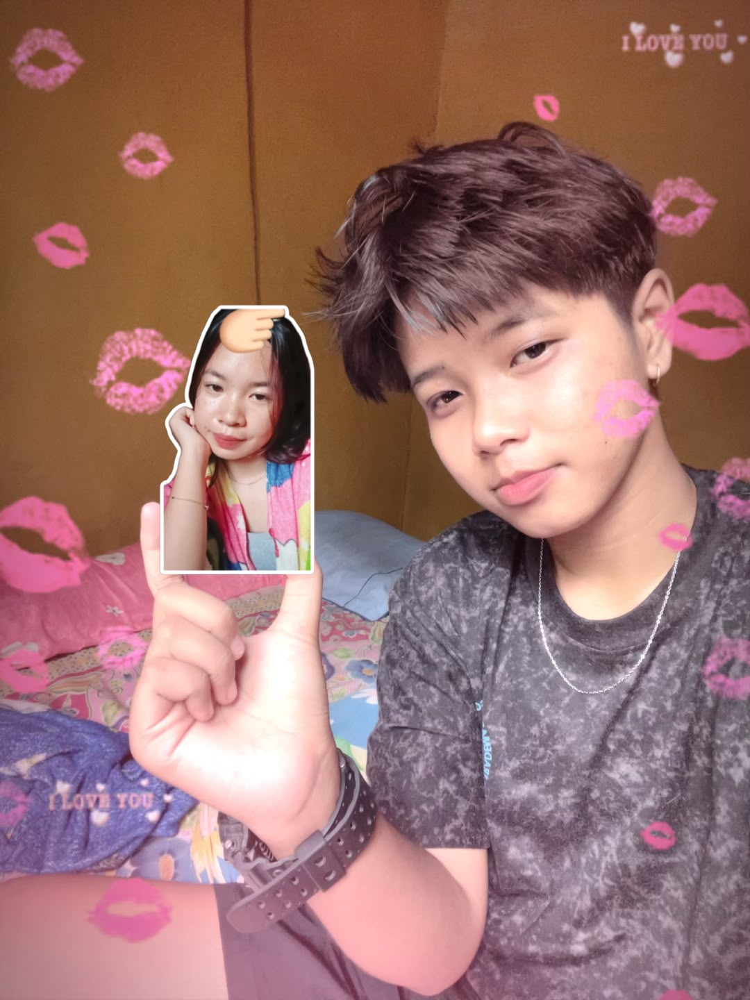

Ada sesuatu yang ingin Intan sampaikan...

Mungkin ini cuma sebuah foto, tapi di dalamnya ada kenangan yang ingin selalu Intan simpan.
Kasiii, mungkin Intan bukan orang yang paling pandai menjelaskan apa yang Intan rasakan.
Kadang Intan cuma bisa bercanda, kadang diam, dan kadang mungkin membuat kamu bingung.
Tapi sebenarnya ada satu hal yang ingin Intan kamu tahu.
Intan bersyukur banget bisa mengenal kamu. Terima kasih karena sudah hadir dan menjadi bagian dari cerita hidup Intan.
Hal-hal kecil yang kamu lakukan mungkin terlihat sederhana. Tapi buat Intan, perhatian kecil, pesan singkat, candaan, dan waktu yang kamu berikan punya arti yang jauh lebih besar.
Intan nggak tahu bagaimana cerita kita ke depannya.
Tapi selama masih diberi kesempatan, Intan ingin terus menjaga apa yang sudah kita punya.
Jangan pernah berpikir bahwa keberadaan kamu nggak berarti.
Karena tanpa kamu sadari, ada seseorang yang bisa tersenyum hanya karena melihat nama kamu muncul di layar.
Terima kasih sudah menjadi bagian dari cerita Intan.
Kalau suatu hari kita melihat kembali semua kenangan ini, kamu mau tetap tersenyum karena pernah memilih untuk bertahan bersama Intan?